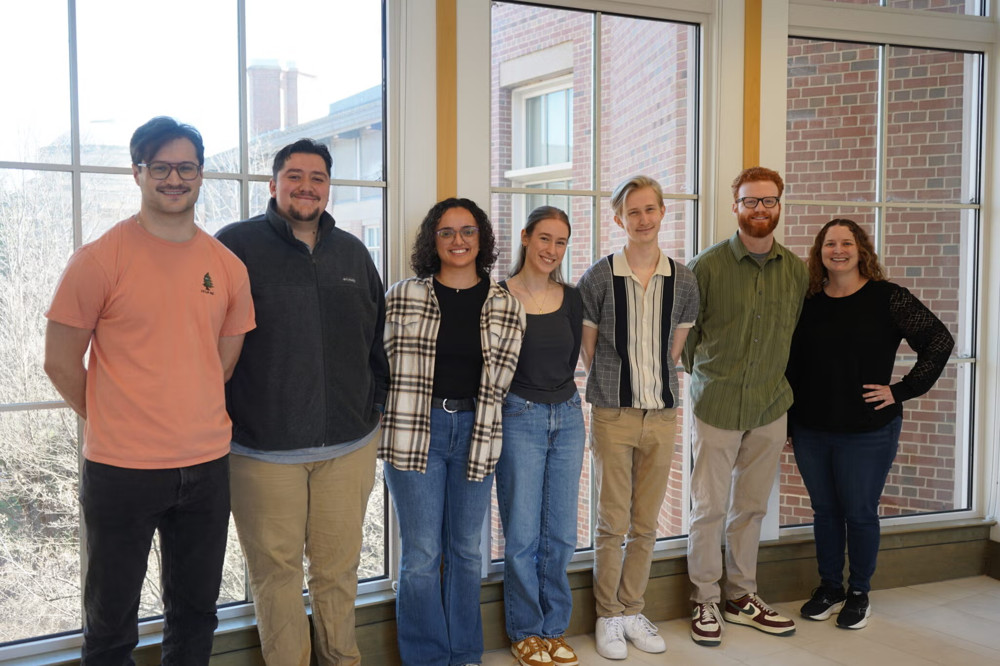

The Hicks Lab is committed to creating a laboratory environment that is equitable, inclusive, and welcoming.
Exquisite differentiation of biological molecules that dictate life and their underlying biochemistry is a challenging endeavor underpinning both fundamental biological research and applied bioengineering. The overarching goal of the Hicks lab’s interdisciplinary research program is to develop creative mass spectrometry-based proteomics approaches to address such questions predominately in photosynthetic and microbial organisms